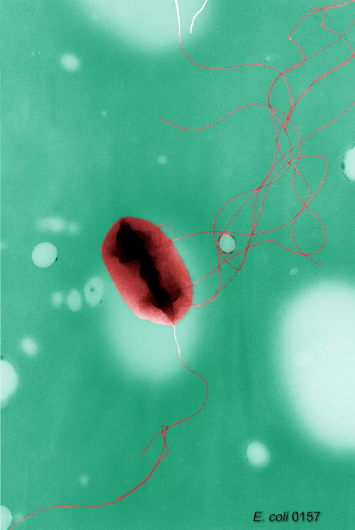

bacterial-type flagellum
The rotary motility organelle of bacteria: a long helical filament of flagellin joined by a flexible hook to a basal body that spans the cell envelope. The basal body houses a rotor (MS and C rings) driven by membrane-embedded stator units that convert ion flow (H+ or Na+) into torque; the flagellar type III export apparatus at its base secretes the axial subunits. Not homologous to the archaeal archaellum or the eukaryotic cilium. [DOI:10.1146/annurev.biochem.72.121801.161737]

NCBITaxon:83334) · E. H. White, Content Provider: Peggy S. Hayes; Public domain, via Wikimedia Commons · PUBLIC_DOMAIN · source: WIKIMEDIA_COMMONS File:Escherichia_coli_flagella_TEM.png (M4617695) · Synonyms: bacterial flagellum
Has part: GO:0009420 GO:0009424 GO:0009425
Xrefs: uniprot.location:SL-0307
Components
| Component | Type | Part of / acts on | Grounding | Genes | Stoichiometry | Essential | Role |
|---|---|---|---|---|---|---|---|
| flagellin (FliC) | PROTEIN | part of | fliC, fljB | ~20,000 subunits per filament; 11 protofilaments | ESSENTIAL | Polymerises into the helical propeller filament.
| |
| hook protein (FlgE) | PROTEIN | part of | flgE | ESSENTIAL | Flexible universal joint transmitting torque from the basal body to the filament.
| ||
| MS ring (FliF) | PROTEIN_COMPLEX | part of | fliF | ESSENTIAL | Membrane-embedded rotor ring; the platform on which the basal body assembles.
| ||
| C ring / switch complex (FliG, FliM, FliN) | PROTEIN_COMPLEX | part of | fliG, fliM, fliN | ESSENTIAL | Cytoplasmic rotor ring; FliG engages the stator and the complex sets rotational direction in response to CheY-P.
| ||
| stator unit (MotA5MotB2) | PROTEIN_COMPLEX | part of | motA, motB | DISPENSABLE | Ion-driven torque generator anchored to peptidoglycan through MotB. A constituent of the motor, not machinery acting on it: DISPENSABLE here means the flagellum still assembles without MotA/MotB, but it cannot rotate (docs/CURATION.md, component boundary).
| ||
| rod (FlgB, FlgC, FlgF, FlgG) | PROTEIN_COMPLEX | part of | flgB, flgC, flgF, flgG | ESSENTIAL | Drive shaft spanning the periplasm from MS ring to hook.
| ||
| L and P rings (FlgH, FlgI) | PROTEIN_COMPLEX | part of | flgH, flgI | CONDITIONAL | Bushing through the outer membrane and peptidoglycan in Gram-negative bacteria; absent in Gram-positives.
| ||
| flagellar type III export apparatus (FlhA, FlhB, FliP, FliQ, FliR) | PROTEIN_COMPLEX | part of | flhA, flhB, fliP, fliQ, fliR | ESSENTIAL | Secretes rod, hook and filament subunits through the growing structure.
|
Taxonomic distribution
NCBITaxon:2Bacteria — COMMON: Widespread but repeatedly lost; some lineages (spirochaetes) keep the flagella periplasmic. [DOI:10.1038/nrmicro1887]NCBITaxon:2157Archaea — ABSENT: Archaea swim with the archaellum, a type-IV-pilus-related structure with no homology to the bacterial flagellum. [DOI:10.3389/fmicb.2015.00023]
Canonical examples
NCBITaxon:90371Salmonella enterica subsp. enterica serovar Typhimurium — The genetic model for flagellar assembly and export. [DOI:10.1146/annurev.micro.57.030502.090832]NCBITaxon:83333Escherichia coli K-12 — Model for motor physics and chemotaxis. [DOI:10.1146/annurev.biochem.72.121801.161737]NCBITaxon:83334Escherichia coli O157:H7 — Taxon depicted in the hosted TEM; purified H7 flagellar filaments from an O157:H7 isolate were independently characterized by microscopy and immunoassay. [DOI:10.1128/jcm.26.7.1367-1372.1988]
Functions
- bacterial-type flagellum-dependent cell motility
GO:0071973DOI:10.1146/annurev.biochem.72.121801.161737Berg 2003 reviews the rotary motor and swimming.
Associated traits
- CONFERS
METPO:1000704flagellated - CONFERS
METPO:1000702motile — One of several motility machines; gliding and twitching motility do not use it.
Physical properties
- DIAMETER: ~20
UO:0000018(filament) [DOI:10.1146/annurev.micro.57.030502.090832] - LENGTH: 5-20
UO:0000017(filament) [DOI:10.1146/annurev.micro.57.030502.090832] - ROTATION_SPEED: ~100-300
UO:0000092(Escherichia coli motor under light load) [DOI:10.1146/annurev.biochem.72.121801.161737]
Mechanism graphs
Ion flow through the stator turns the rotor and the filament (FUNCTION)
| Subject | Predicate | Object | Evidence |
|---|---|---|---|
| proton motive force | powers | MotA5MotB2 stator unit |
|
| MotA5MotB2 stator unit | applies torque to | C ring (FliG) |
|
| C ring (FliG) | drives | flagellar rotation |
|
| flagellar rotation | propels | flagellar filament |
|
| flagellar filament | enables RO:0002327 | bacterial-type flagellum-dependent cell motility |
|
Discussions
- CURATION_TODO (OPEN): Assign InterPro family groundings to each protein component (flagellin, FlgE, FliF, FliG/M/N, MotA/MotB, rod, FlgH/I, fT3SS). Groundings were deliberately left blank rather than guessed; verify each accession against InterPro before adding.
Evidence
DOI:10.1146/annurev.biochem.72.121801.161737Berg 2003, "The rotary motor of bacterial flagella".DOI:10.1146/annurev.micro.57.030502.090832Macnab 2003, "How bacteria assemble flagella".DOI:10.1038/nrmicro1887Chevance & Hughes 2008, "Coordinating assembly of a bacterial macromolecular machine".
Curation history
2026-08-29T00:00:00Zclaude · CREATED_RECORD — Drafted composition, distribution, trait links and torque-generation mechanism graph from the cited reviews and stator structures. Not yet human-reviewed.2026-08-29T03:00:00Zclaude · ADD_IMAGE — Added Commons image File:Escherichia_coli_flagella_TEM.png (public domain, CDC PHIL, NCBITaxon:83334); no publication, per decision #30. Added E. coli O157:H7 to taxonomic_distribution as the imaged strain.2026-08-30T02:14:17Zuniprot_sl · ADD_UNIPROT_SL_XREF — Added uniprot.location:SL-0307 (Bacterial flagellum); mapping read from the GO line of UniProt subcell.txt.2026-08-30T19:08:55Zfetch_commons_image · ADD_IMAGE — Updated Commons image File:Escherichia_coli_flagella_TEM.png (PUBLIC_DOMAIN, Escherichia coli O157:H7); licence, attribution and taxon read from the Commons and Wikidata APIs at retrieval.2026-08-30T19:11:12Zfetch_commons_image · ADD_IMAGE — Updated Commons image File:Escherichia_coli_flagella_TEM.png (PUBLIC_DOMAIN, Escherichia coli O157:H7); licence, attribution and taxon read from the Commons and Wikidata APIs at retrieval.2026-08-30T19:29:55Zcodex · REVIEW_EVIDENCE_AND_ESSENTIALITY — Corrected MotA/MotB stator essentiality from ESSENTIAL to DISPENSABLE using deletion-mutant imaging; changed rotation speed from generic hertz to UO turns per second; added evidence to both trait links; removed the hosted-image strain from clade-level taxonomic distribution; and replaced the silently truncated Commons credit with a complete provenance summary.2026-08-30T19:38:35Zcodex · REVIEW_TAXONOMIC_SCOPE — Removed Escherichia coli O157:H7 from taxonomic_distribution because a hosted image establishes an observed specimen, not universal presence across the strain; the image retains its own taxon provenance.2026-08-30T19:40:01Zcodex · DOCUMENT_IMAGE_EXEMPLAR — Added the hosted-image O157:H7 taxon as a cited canonical example rather than overstating it as a universally flagellated taxonomic scope.2026-08-31T06:03:17Zclaude · APPLY_COMPONENT_BOUNDARY — Component-boundary rule (#66, #72): stated in the stator role that DISPENSABLE here means 'not needed for assembly', not 'peripheral machinery'.2026-08-31T06:12:34Zclaude · SET_COMPONENT_ROLE — component_role became required (#77) so the constituent/machinery distinction is machine-readable rather than prose. Set per component; ASSOCIATED_MACHINERY only where the protein acts on the already-assembled structure.
Source: data/structures/appendage/bacterial_type_flagellum.yaml